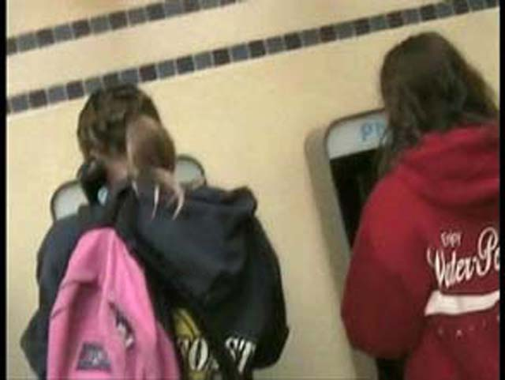
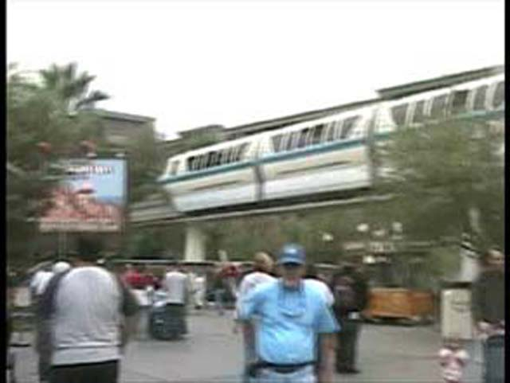
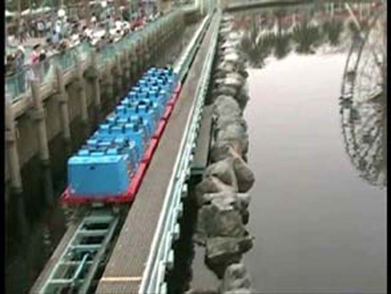
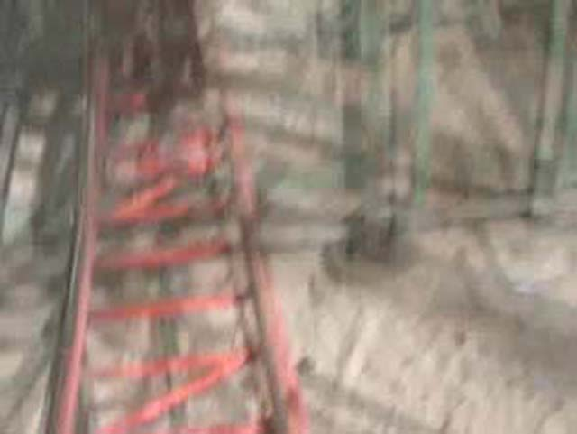
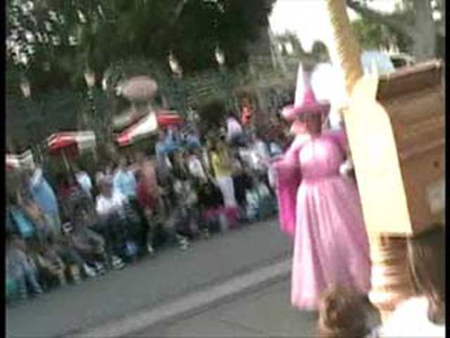

Fall 2005 Photos
Disneyland Resort Knotts Berry Farm Six Flags Magic Mountain
California Adventure put this Chicken Little up that looks like it came from hell.

Girls just doing what they do best, yapping away on the phone!
 We all rode Tower of Terror because its fun.
We all rode Tower of Terror because its fun.

I'm dead serious when I say the monorail is stuck!
I declare Grizzly the Best River Rapids Ride I've been on! Alot better than Bigfoot Rapids and Roaring Rapids!
Disneys California Adventure is one place to go for great tortillas!
Yo dude! Whats Up!
As we head towards Paradise Peir, we can see Califronia Trimming! (To those who don't know, California Screamin has been trimmed) Speaking of California Trimming, lets see how bad the trims ruined the ride.

The launch is the same, still weaker than Xcelerator, Speed the Ride, V2, and Montezooma. I think that California Trimmings launch is stronger than Supermans though!
This is the only spot on the ride left with airtime.
 This is the only inversion in the whole Disneyland Resort!
This is the only inversion in the whole Disneyland Resort!
That sucked! My ass only lifted off the seat once!
This is me being a Filming Nut on the Mostly Airtimeless California Trimming!
Ariana: My otter vibrates just like SFMMs Psyclone!
Yo! Yo! Yo! Yo! Yo!!!!!!!!!!!!!!
 If only I could point at you with a diffrent finger!
If only I could point at you with a diffrent finger!
Another Incredible Coasters moment of stupidity!

YAY!!! BIG DROP!!!!!
Celeste loves Mullholland Madness!

The parade is still going on at the DLR.
This is Space Mtns Station with the lights on. The lights are on because its having technical difficulties! Six Flags Style!
Just a typical moment of stupidity from Incredible Coasters!
How can you be a filming nut and score points at the same time Kevin?
Man, I didn't know Mikey was that good!
Oh boy! An Arrow Ride!
Oh boy! Haunted Mansions been decorated for the holidays!
Grrr! I'm Jack Skellingtons Assistant! Gimme some Candy!
I didn't know that Frosty was one of the 999 ghosts!
On the 3rd day of Christmas, My goo love gave to me, 5 lucky "Please keep your hands and arms inside your black christmas sleigh at all times. Thank you."
Foolish Mortals! You have looked into my eyes! Your path now leads you to the Vekoma rides! HA! HA! HA!
CREDIT!!!!!!!!!!!
Knotts Berry Farm
Home